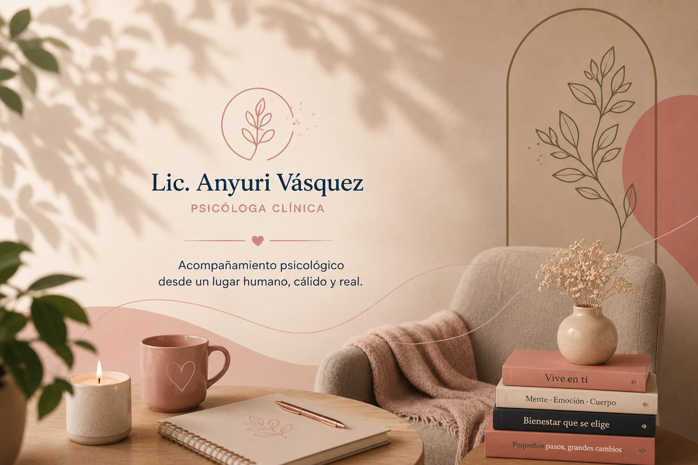
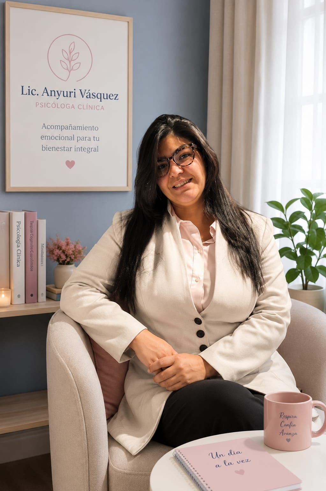

Te ofrezco un espacio seguro, confidencial y cercano para ayudarte a gestionar la ansiedad, el estrés y los desafíos de la vida.

Aprende a manejar la ansiedad, el estrés y recuperar tu calma.
Mejora la comunicación y construye relaciones más sanas y felices.
Fortalece tu confianza y construye una mejor relación contigo misma.
Acompañamiento respetuoso para los desafíos de la crianza.
Apoyo especializado para adaptarte y reconstruir tu vida.
Desarrolla herramientas para gestionar tus emociones.

Sobre mí
Soy psicóloga clínica con enfoque humanista y Gestalt. Mi propósito es acompañarte en tu proceso de crecimiento personal, ofreciéndote un espacio seguro, empático y libre de juicios.
Creo en el poder de la terapia para generar cambios reales y significativos en tu vida.
Conocer más sobre míMigrar puede ser un proceso desafiante y complejo que genera emociones como tristeza, ansiedad, culpa y soledad. Te acompaño a transitar este camino con herramientas que te ayuden a sentirte en paz y construir tu nuevo hogar.
Reservar una sesión →"Por primera vez sentí que alguien entendía lo que estaba viviendo. Me ayudó muchísimo a manejar mi ansiedad."
— M., 28 años
"El acompañamiento de Anyuri fue clave para mejorar mi autoestima y aprender a poner límites sin sentirme culpable."
— L., 34 años
"Me sentí comprendida en mi proceso migratorio. Es una profesional increíblemente humana y cercana."
— K., 30 años
Agenda tu primera sesión y da el primer paso hacia una vida más tranquila y plena.
Atención 100% online